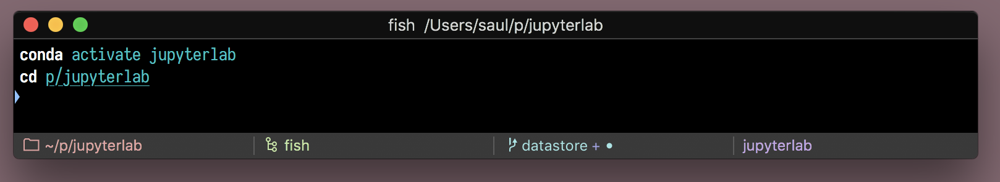
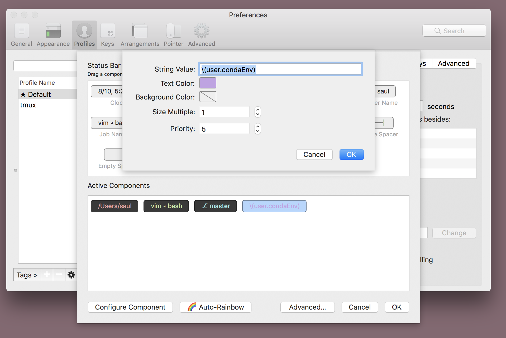

Conda Environment in iTerm Status Bar
2019-08-10
iTerm just added a really snazzy status bar, to show things like your current directory and git branch. I wanted to also add my current conda environment. By default conda puts the environment at the end of your command prompt, but I find this problematic when I have to copy and paste my history. It ends up copying my conda environment as well. So here is a guide to adding this to your status bar instead

First, we have to make iTerm aware of your current conda environment. We can access this from the CONDA_DEFAULT_ENV environmental variable and send it to our terminal by setting a user-defined-variable. I use the fish shell, so for me this means adding this to the end of my ~/.config/fish/config.fish:
test -e ~/.iterm2_shell_integration.fish ; and source ~/.iterm2_shell_integration.fish
function iterm2_print_user_vars
iterm2_set_user_var condaEnv "$CONDA_DEFAULT_ENV"
end
Now, we can go to the status bar settings in the iTerm preference, "Profiles", "Session", "Configure Status Bar", and add a "Interpolated String" component. Then configure that component and set it's value to \(user.condaEnv).

Now, once you activate a conda environment, it should show up in your status bar.
The only thing left to do is to stop it from also showing up in your command prompt. We should be able to do this by setting the changeps1 conda config to False (conda config --set changeps1 False), but conda currently doesn't respect this in its fish integration. So instead, I just reset my fish prompts after running the conda integration in my config.fish:
. /usr/local/miniconda3/etc/fish/conf.d/conda.fish
# Reset fish prompts to empty
function fish_prompt
end
function fish_right_prompt
end